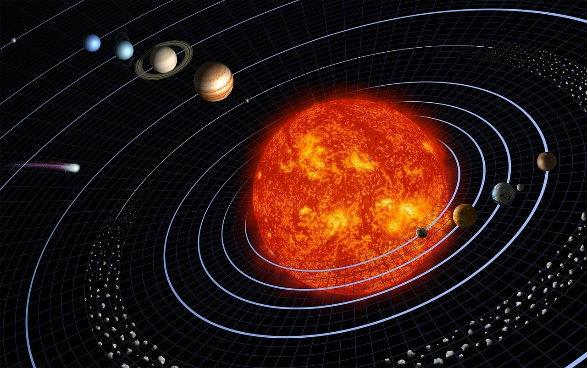

A naprendszerünkben 8 bolygó kerring a harmandik a föld. A naprendszerünk a tejút galaxysba van.

A Naptól számított nyolc bolygó mindegyike teljesen egyedi világ, tele meglepő természeti csodákkal. Rendkívül érdekes például a Vénusz, amely bár távolabb van a Naptól, mint a Merkúr, mégis a Naprendszer legforróbb bolygója: a vastag, szén-dioxidban gazdag légköre által keltett üvegházhatás miatt felszíni hőmérséklete eléri az 465 °C-ot. Egy másik lenyűgöző jelenség a Jupiteren található Nagy Vörös Folt, ami valójában egy akkora gigantikus vihar, hogy a Föld simán elférne benne, és amely már legalább több száz éve megszakítás nélkül tombol.
Tudj meg többet!| bolygó | hányadik a Naptól | van-e holdja |
| Jupiter | 5. | 115. |
| Szaturnusz | 6. | 293. |
| Uránusz | 7. | 29. |